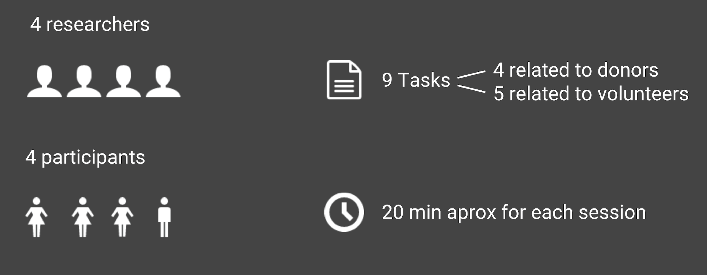
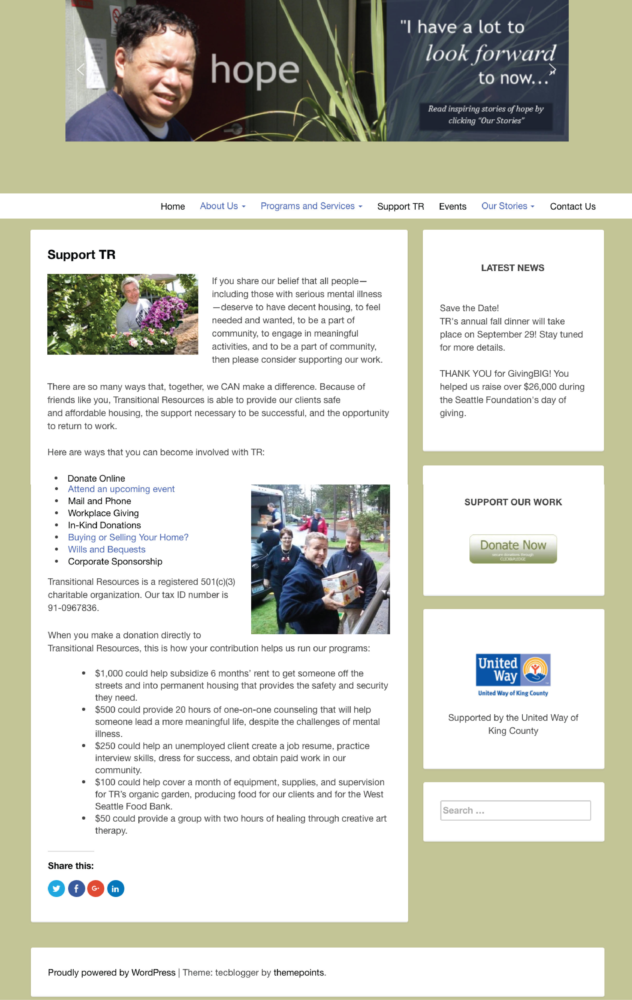

Transition Resources Website Redesign
- Goal: Improve TR website with the main users tasks and client's goals in mind.
Introduction
This project was developed on my User Centered Web Design class in a team of 5.
Original Website:
Domain: Non-profit organization, Mental illness & homeless
About Transitional Resources (TR):
- Mental health center and residential facility serving 230+ clients.
- Helps people struggling with most serious forms of homelessness and mental illness.
- Highly personalized, human approach to care focused on all aspects of recovery.
Key Issues:
- Visual design not attractive or aesthetic
- TR logo only visible on homepage, near middle of fold Convoluted navigation
- Navigation bar located in awkward position
- Most pages only accessible through the top menu and some are only accessible through links in page's body.
- No information geared toward volunteers (other than job postings)
- Staff info doesn't include pictures or bios
Main research methods:
Additional research methods:
- Heuristic evaluation (score 56/100)
- Stakeholder meeting
- Stakeholder researchm data
Based on our reserch we created the following personas:
We also created a list of the task we are expecting this "personas" to do in the website:
We used card sort method to generate our site map.
- We asked 22 participants to do the Card Sort.
- Each card sord included 45 cards
This is our resulting site map:

Paper Prototype
Each of the team members designed their own paper prototype. Then we got together as a team and consolidated our ideas in a single paper prototype.
Lo-Fi Prototype
Try our lo-fi prototype here.
Then we created a low fidelitity prototype in Atomic. Below are a few screens from our prototype.
Usability Testing
We used our prototype to test it among 4 participants and discovered some areas of opportunity.
Test process:

Test findings:

Hi-Fi Prototype
Try our hi-fi prototype here.
Below you can see a direct comparision on how the information about donations are presented before and after the redesign.
Before:

After:
These are the screens from our final design.